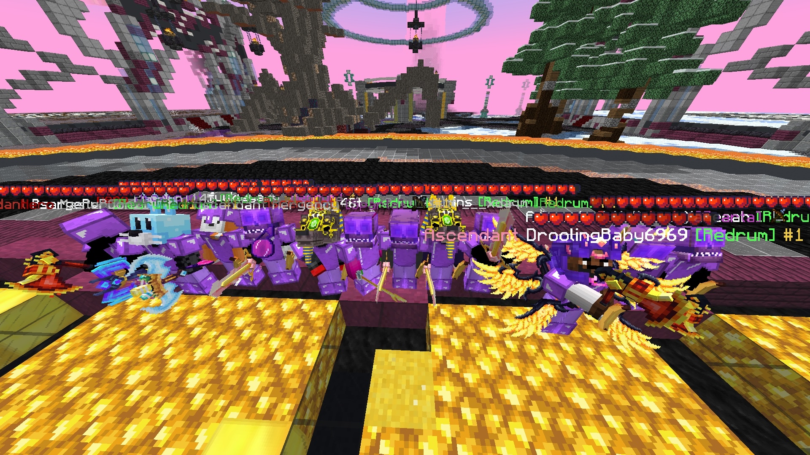
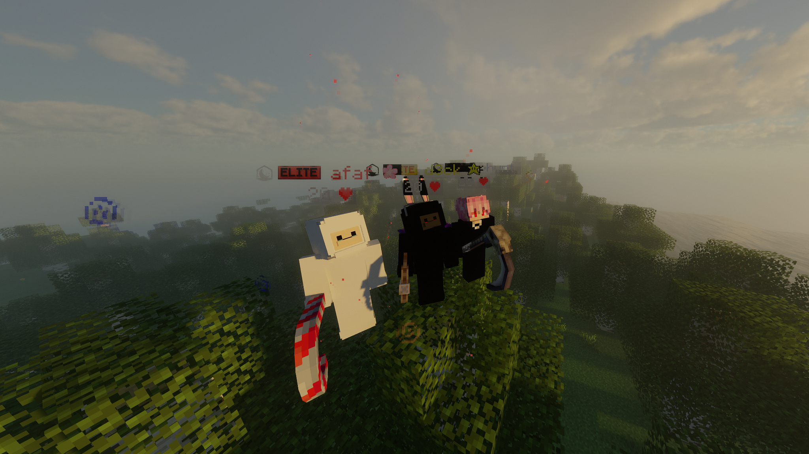

Winning With the Team
June 4, 2024 by Nickolai Newman

This screenshot was taken in 2024 while I was playing a
Minecraft game mode called Factions. I was part of a large
team of around 40 to 50 players and also had the opportunity
to help lead the group.
The picture was taken after we won an event together. It was
a fun experience because everyone had to communicate and work
as a team, and winning made the moment even more memorable.
This was one of my favourite experiences playing Minecraft
with a large group of people.
Still Playing Together
September 9, 2022 by Nickolai Newman

This picture was taken while I was playing Minecraft with
some friends that I have known since 2019. We have spent a
lot of time playing different games together over the years,
and Minecraft has always been one of the games we come back to.
What makes the picture special to me is that we still play
together today. Even though this screenshot was taken back
in 2022, it reminds me of how long we have known each other
and how many good memories we have made from simply playing
games together.